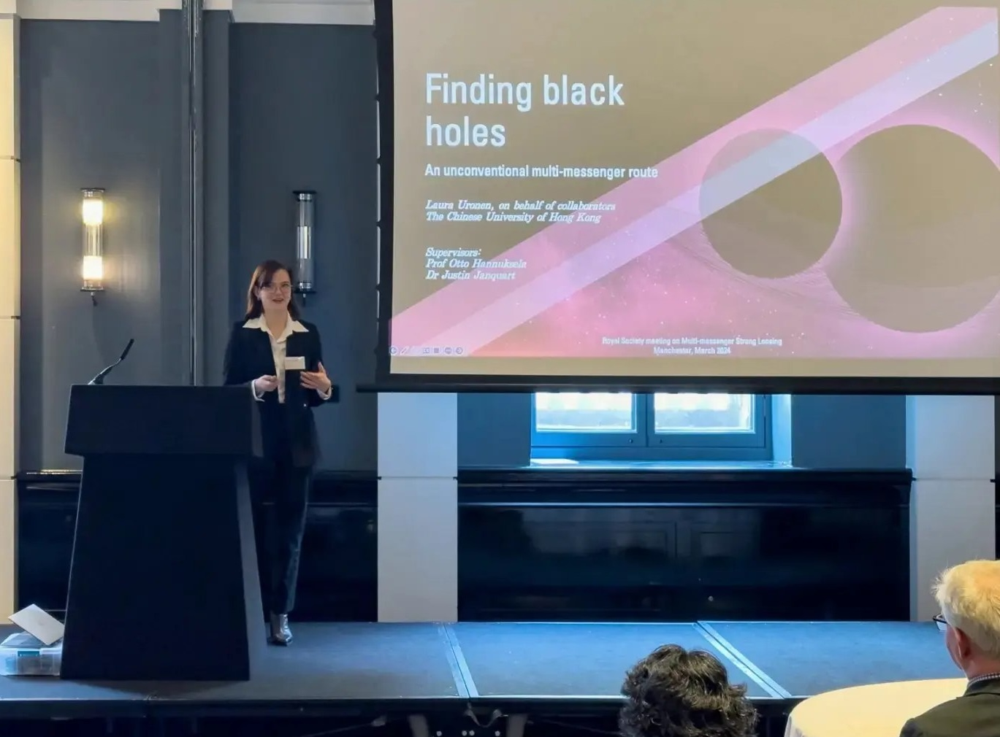

About Me
Speak, friend, and enter!
I'm Laura Uronen - for the pronunciation, the Spanish way is a safe bet. I'm a Karelian-Finnish PhD student in gravitational wave physics at the Chinese University of Hong Kong, and a member of the LIGO-Virgo-KAGRA collaboration.
My work mainly focuses on lensed gravitational wave searches, as well as seeking to further advance multi-messenger astronomy.
I am primarly a gravitational-wave physicist, but I also work strong on the electromagnetic lensing side of things---if jack of all trades were a job description, it would suit me well.
It was easy enough for me to decide to become an astrophysicist when I spent my childhood with my head in the stars and my nose in a children's science book.
People often asked me if my interest in space meant I wanted to be an astronaut, but when I visited Cape Canaveral at age 9, I was more captivated by the role of ground control.
From there, the path to an Astrophysics PhD laid itself bare before me, and I took it one step at a time.
I completed my undergraduate Masters' degree in Astrophysics at the University of St Andrews, where my dissertation project focused on a heartbeat binary modelling, and now I am continuing my journey in Hong Kong.
I've found my niche in data analysis, a neat combination of computation, real-life observations, and the problem-solving needed for new detections.
I've been an immigrant my entire life; between a Finnish and Karelian home, a French and Spanish schooling, and now British and Hong Konger cultural immersions, my life has been a little bit scattered around the world.
For that reason, there is no science without community.
The importance of understanding one another as scientists is just as important as understanding our science.
I strive to be involved in the community, having been the President of the undergraduate Physics society, and I am particularly interested in making science accessible and inclusive.
Education
Doctor of Philosophy in Physics
The Chinese University of Hong Kong (2023-Present)
Astrophysics MPhys (Hons), 1st Class
University of St Andrews (2018-2023)
Awards
Hong Kong PhD Fellowship Scheme at CUHK, 2023-2027.
CUHK HKPFS Vice-Chancellor's Scholarship, 2023-2027.
Deans' List at St Andrews, 2019, 2020, and 2021.
Research
Research Interests
We start several million of years ago, with a pair of black holes.
Take the Universe as a big, flat sheet, and put two black holes in it.
These black holes make a dent in the sheet: matter tells spacetime how to curve.
Now, imagine these two black holes orbiting each other -- otherwise, they would just fall right into each other's dents.
As they orbit, the black holes have to work to move the spacetime around them, so they lose energy from their orbit -- this energy is emitted as gravitational waves, which emit from the pair like ripples across a calm lake.
Everything that accelerates in the Universe will emit these waves, but they are so minute that most will never be detected.
The loss of energy from the orbit means that these two black holes will orbit each other closer and closer, soon entering what will become the final spins of a death waltz.
These gravitational waves are emitted at even greater energies, at higher frequencies, until the black holes finally crash into each other and merge into a new, larger black hole.
A compact binary merger has just happened.
And now flash forward millions of (light) years away, in both time and distance, and we zoom back to Earth. Einstein's theory of General Relativity is proven right, and we successfully measured these gravitational waves for the first time in 2015.
This threw all of gravitational-wave physics into a new and exciting era: that of empirical observations.
Gravitational lensing is a well-established field of research over on the side of electromagnetic observations, but it's an emerging one when it comes to gravitational waves.
By necessity, since the first gravitational-wave detection was only a handful of years ago, and gravitational wave lensing hasn't been found---yet.
But both gravitational waves and lensing are consequences of Einstein's General Relativity: so if light is lensed, then it's only natural that gravitational waves are also lensed.
The question my research asks is: if the black holes are lensed, and the galaxy hosting the black holes is also lensed---can we then find the host galaxy?
Previous studies have shown that it's possible, and I aim to push the envelope. When we find the first lensed GW, armed with my research, we can strive towards finding the host of the binary.
There are a lot of challenges to this, but the forecast is promising and the pay-off is worth it.
How do I do this? I use Bayesian inference, a statistical methodology to evaluate the probability with which the lensed black hole came from a certain lensed galaxy, and then I follow it up with a test to determine where inside that galaxy the binary is located.
Partial eclipse of the heart for HD 181793
Supervisor: Prof. Andrew C. Cameron
My Masters' dissertation project sought to establish the system parameters of the new heartbeat binary HD 181793.
The project used radial velocity and transit fitting in conjunction with spectral separation to determine the orbital and stellar characteristics, followed by heartbeat modelling to identify the heartbeat pattern.
Danse macabre: direct detection of the sub-stellar donor in PHL 1445
Supervisor: Dr. Juan V. Hernandez Santisteban
Summer research project that consisted of locating the sub-stellar companion in PHL 1445 using Doppler tomography.
Publications
L. E. Uronen, T. Li, J. Janquart, H. Phurailatpam, J. S. C. Poon, E. Wempe, L. V. E. Koopmans, O. A. Hannuksela. Finding Black Holes: an Unconventional Multi-messenger. Submitted to Phil. Trans. A (2024).
L. E. Uronen, A. Collier Cameron, T. G. Wilson. Dynamical mass determination and partial eclipses of the heartbeat star HD 181793. To appear in MNRAS, (2024).
Conferences & Presentations

Talks
- Royal Society Multi-messenger Lensing in Manchester, UK (March 2024): Contributed talk reviewing black hole localization and presenting the case for pin-point localization.
- Cosmic Frontiers Workshop, Hong Kong (November 2023): Contributed talk reviewing black hole localization.
Posters
- LSST Strong lensing science in Oxford, UK (March 2024): Poster presentation showing the black hole pin-point localization methodology
- LVK F2F Meeting in Toyama, Japan (September 2023): Poster presentation giving a review of gravitational-wave lensing data analysis, as well as a case study of an interesting O2 trigger.
Contact
Email: laura.uronen@gmail.com